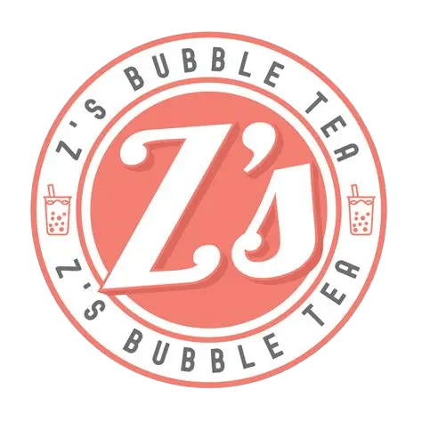

Southgate, MI • Order #A11
------------------------------
• Brown Sugar Boba .......... $6.50
• Taro Milk Tea ............... $5.75
------------------------------
06/11 — 5:44 PM

There are many things that have significance to our relationship that would go unnoticed to any one else, boba is one of those. It's one of our things. The gym could never be that, right baby. That day in June, just hours before our feelings for each other were being addressed we went to Z’s Bubble Tea. I remember how beautiful you looked that day and how badly I wanted to be yours, doing anything I could to be as close to you as possible. I pulled you by the waist trying to stop you from entering my name and phone number into the kiosk. I’m glad that you did though because I have the notifications from there the days we’ve gone, starting from June 11th. We then went to Heritage waiting for the movies. That’s when we created the list of things we wanted to do together, who knew it would've been something we still do to this day, with an updated name of course. I love trying new things with you and getting to experience that with the person that I love more than anything. Later that night in the MJR parking lot you confessed to me. While we both were nervous and unsure where to go with our feelings it was the greatest thing ever hearing that my feelings were reciprocated. Whenever we go to a new area it’s always something we look for and it’ll never not make me think of you.